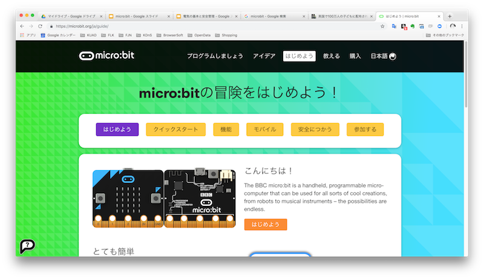
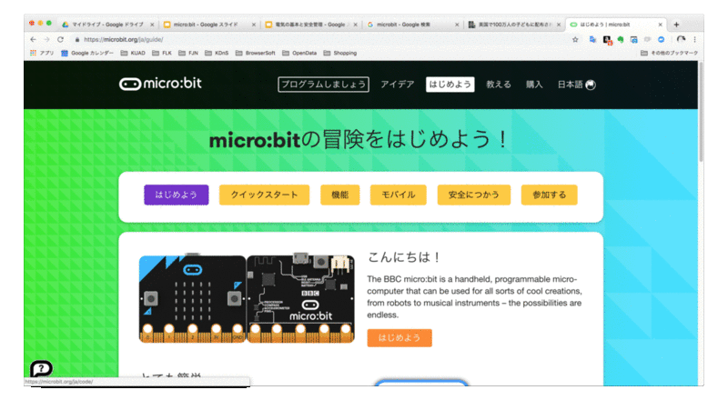
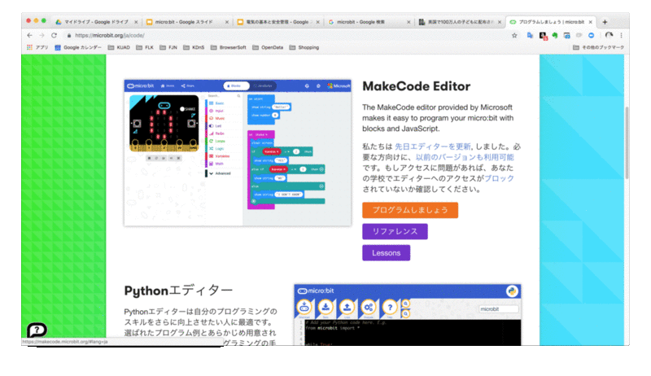
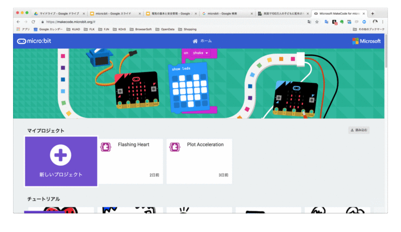
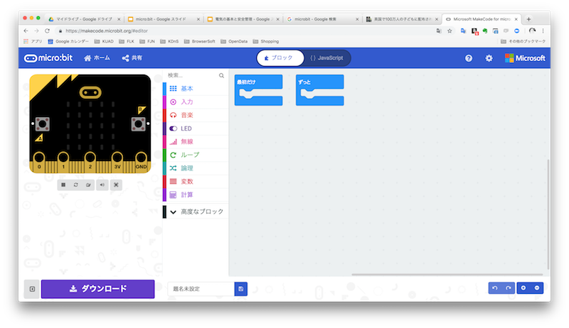
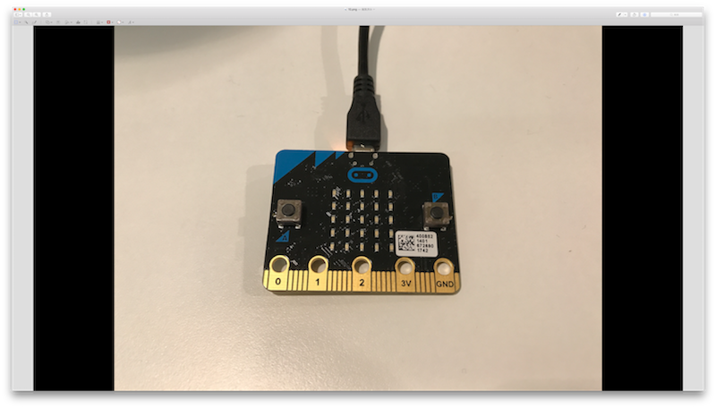

microbitの ホームページ にアクセス
「プログラムをしましょう」をクリック
MakeCode Editorの中の「プログラムをしましょう」をクリック
makeCodeのホーム画面がひらいたら、「新しいプロジェクト」をクリック
エディタに入れた!

下のウィンドウでプログラムのファイル名を変更可能
隣の保存マークで保存可能
ファイルを開いたらまず行う！
プログラムができたら書き込みを行う
まずは、ファイルのダウンロードを行う
.hexファイルというものがダウンロードされる
＊Macの場合ダウンロードフォルダに格納される
micro:bitをマイクロUSBで接続する

FinderにMICROBITが出現
先ほどダウンロードしたファイルをアップロード（ドラッグドロップ）する